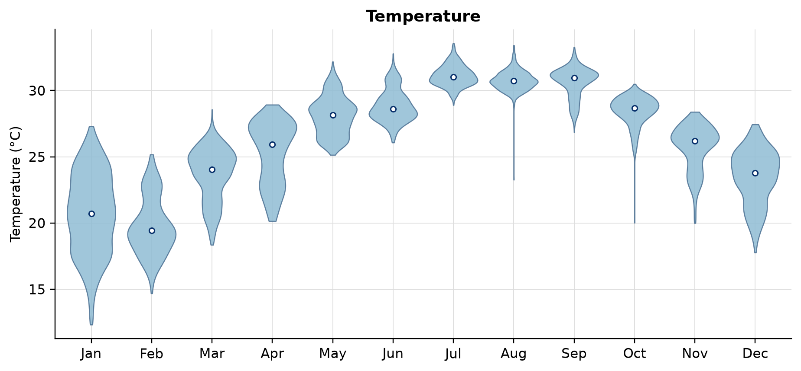
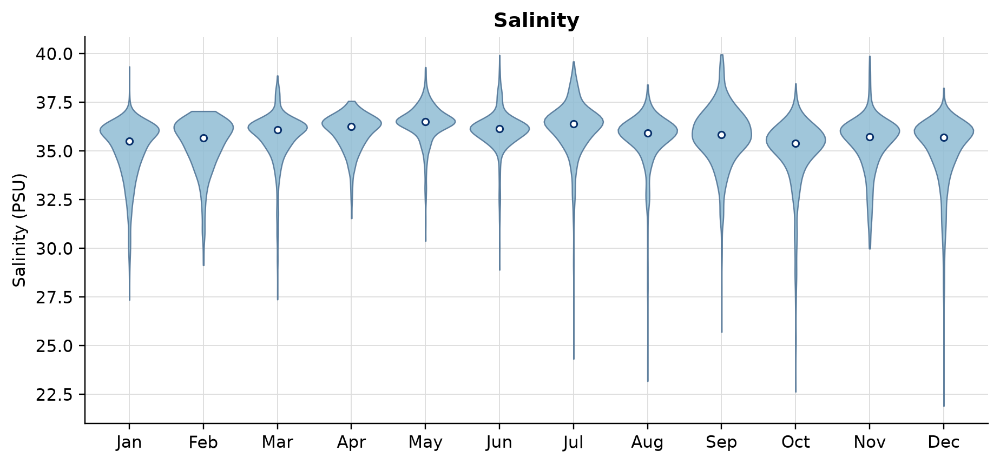
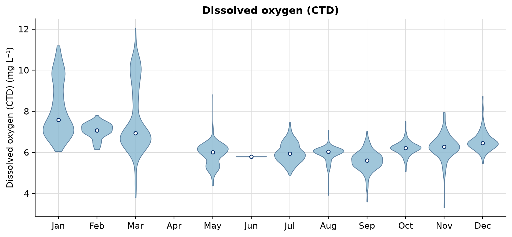
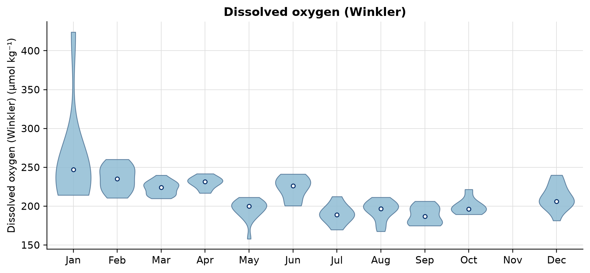
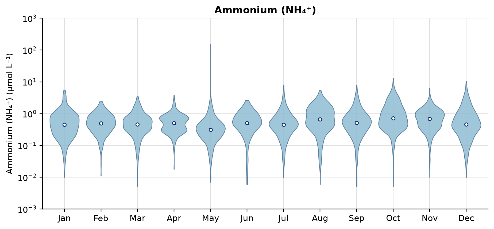
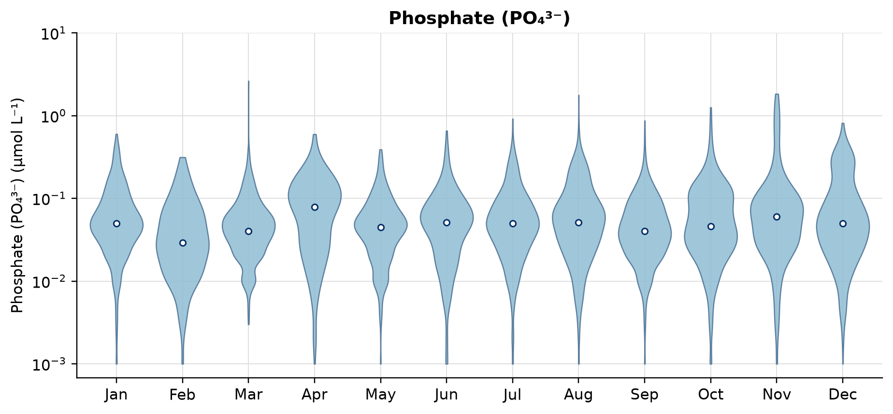
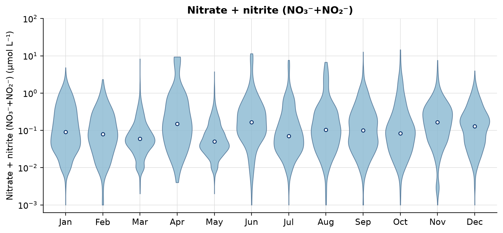
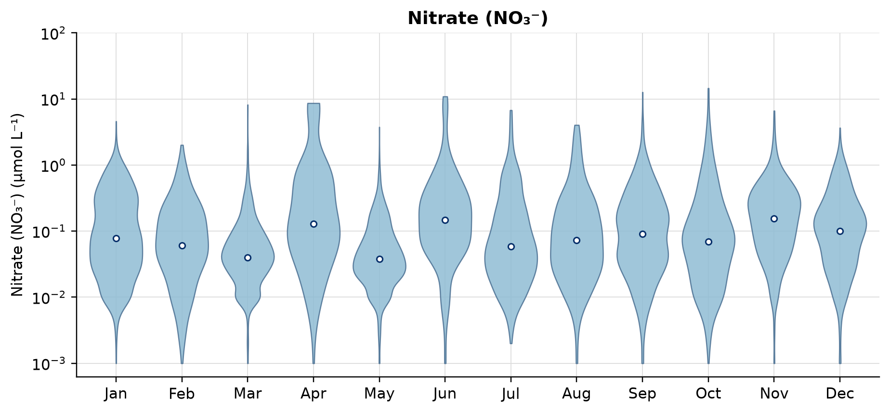
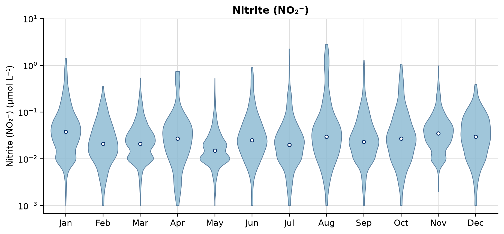
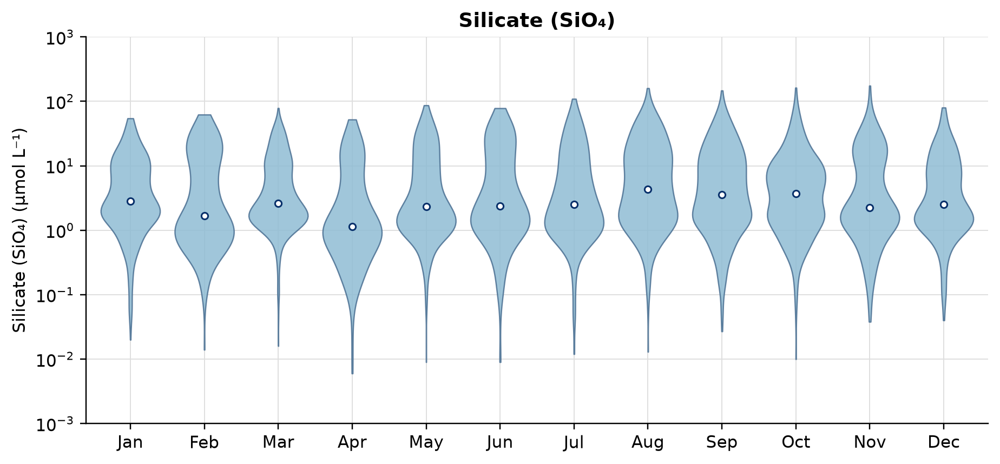
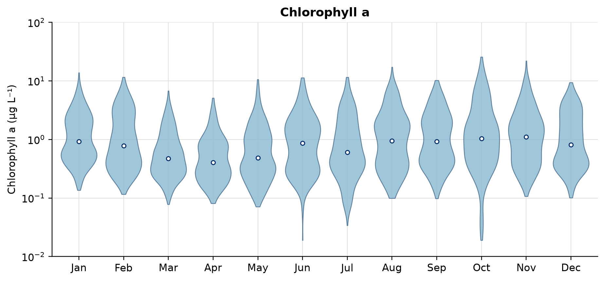
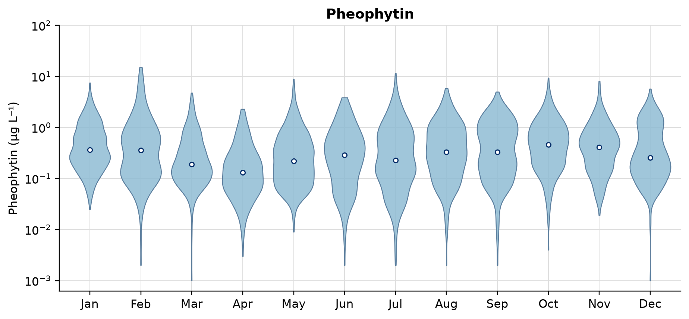
The report outline calls out “seasonality in parameters”. Restricting to surface samples keeps the comparison clean, since the bi-monthly cruises sample the same near-surface waters through the year.












Clear structure emerges:
Reading the sparse analytes. Winkler oxygen (o2_disc) has so few surface samples, spread over so few months, that each monthly violin is built from a handful of points — read its shape with caution. And because nitrate + nitrite is the sum of nitrate and nitrite, those three panels are not independent of one another.
| Temperature | Salinity | Dissolved oxygen (CTD) | Dissolved oxygen (Winkler) | Ammonium (NH₄⁺) | Phosphate (PO₄³⁻) | Nitrate + nitrite (NO₃⁻+NO₂⁻) | Nitrate (NO₃⁻) | Nitrite (NO₂⁻) | Silicate (SiO₄) | Chlorophyll a | Pheophytin | |
|---|---|---|---|---|---|---|---|---|---|---|---|---|
| season | ||||||||||||
| Winter | 21.642 | 35.603 | 7.076 | 222.630 | 0.444 | 0.040 | 0.080 | 0.050 | 0.025 | 2.217 | 0.853 | 0.316 |
| Spring | 26.008 | 36.295 | 6.376 | 218.100 | 0.371 | 0.040 | 0.050 | 0.030 | 0.013 | 2.092 | 0.466 | 0.190 |
| Summer | 30.686 | 36.153 | 5.985 | 198.567 | 0.451 | 0.046 | 0.079 | 0.050 | 0.020 | 2.832 | 0.768 | 0.273 |
| Autumn | 28.674 | 35.613 | 5.996 | 195.480 | 0.590 | 0.040 | 0.080 | 0.054 | 0.024 | 2.600 | 1.029 | 0.402 |
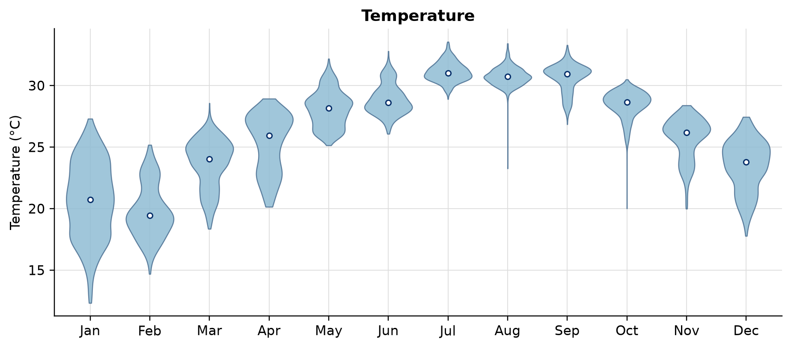
Reading the seasonal signal. Because the cruises are only bi-monthly, each monthly violin pools several years of observations. The shape and width of a violin therefore reflect both within-season variability and interannual differences, not just day-to-day spread. The white dot marks the median.
---
title: "Seasonality"
---
The report outline calls out "seasonality in parameters". Restricting to
**surface** samples keeps the comparison clean, since the bi-monthly cruises
sample the same near-surface waters through the year.
```{python}
#| echo: false
import numpy as np
import pandas as pd
import matplotlib.pyplot as plt
import sfer_common as sfer
sfer.style()
df = sfer.load()
```
## Monthly cycles
```{python}
#| echo: false
#| fig-cap:
#| - "Surface temperature by month."
#| - "Surface salinity by month."
#| - "Surface CTD dissolved oxygen by month."
#| - "Surface Winkler dissolved oxygen by month (sparse coverage)."
#| - "Surface ammonium by month (log scale)."
#| - "Surface phosphate by month (log scale)."
#| - "Surface nitrate + nitrite by month (log scale)."
#| - "Surface nitrate by month (log scale)."
#| - "Surface nitrite by month (log scale)."
#| - "Surface silicate by month (log scale)."
#| - "Surface chlorophyll a by month (log scale)."
#| - "Surface pheophytin by month (log scale)."
log_panels = {"nh4", "po4", "no3_no2", "no3", "no2", "si", "chl", "pheo"}
for col in sfer.ANALYTES:
fig, ax = plt.subplots(figsize=(8.5, 4))
sfer.month_violin(df, col, ax, depth_class="Surface", logy=col in log_panels)
```
Clear structure emerges:
- **Temperature** follows an obvious annual cycle, coolest in Jan–Feb and
warmest in Jul–Aug.
- **Salinity** is highest in the dry spring (Mar–May) and dips in the wet
season (Aug–Oct) when rainfall and runoff freshen the shelf.
- **Chlorophyll a**, **pheophytin** and the **nutrients** peak in the wetter,
warmer months, when runoff and mixing deliver nutrients to the surface.
- **Oxygen** (both the CTD and Winkler measures) is highest in the cooler
months, consistent with greater gas solubility at lower temperatures.
::: {.callout-note}
**Reading the sparse analytes.** Winkler oxygen (`o2_disc`) has so few surface
samples, spread over so few months, that each monthly violin is built from a
handful of points — read its shape with caution. And because *nitrate + nitrite*
is the sum of *nitrate* and *nitrite*, those three panels are not independent of
one another.
:::
## Seasonal medians
```{python}
#| echo: false
season_order = ["Winter", "Spring", "Summer", "Autumn"]
med = (df[df.depth_class == "Surface"]
.groupby("season", observed=True)[sfer.ANALYTES]
.median()
.reindex(season_order)
.round(3))
med.columns = [sfer.label(c) for c in med.columns]
med
```
```{python}
#| echo: false
#| fig-cap: "Surface temperature by month, with the median marked — the clearest seasonal signal in the dataset."
fig, ax = plt.subplots(figsize=(8.5, 3.8))
sfer.month_violin(df, "temp", ax, depth_class="Surface")
plt.tight_layout()
```
::: {.callout-tip}
**Reading the seasonal signal.** Because the cruises are only bi-monthly, each
monthly violin pools several years of observations. The shape and width of a
violin therefore reflect both within-season variability and interannual
differences, not just day-to-day spread. The white dot marks the median.
:::